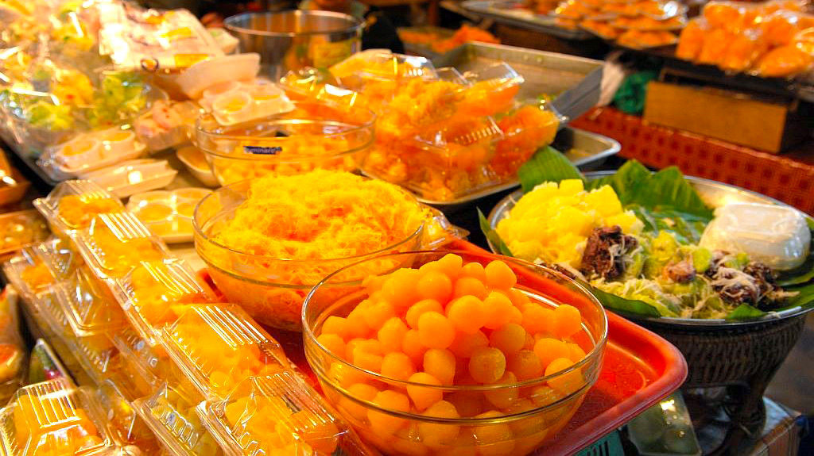
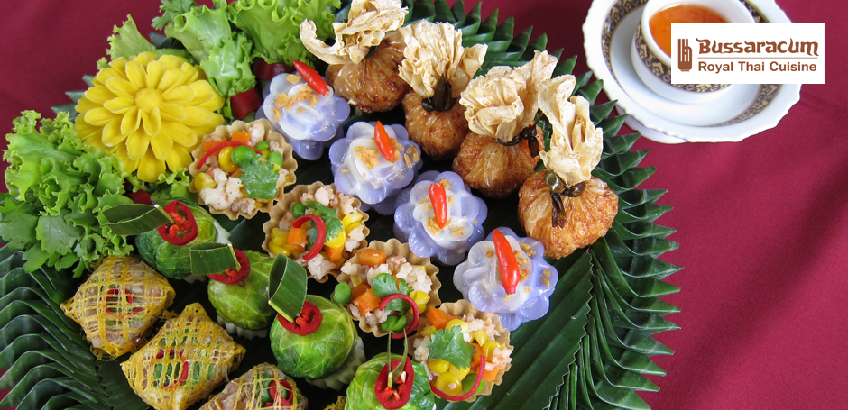

ชนิดอาหารไทย
อาหารไทยแบ่งออกเป็น ๒ ชนิด คือ อาหารคาว และอาหารหวาน
นอกจากนี้ยังมีอาหารว่าง ซึ่งเป็นอาหารคาวก็ได้ หรืออาหารหวานก็ได้ ไว้รับประทานระหว่างแต่ละมื้อ
อาหารคาว
อาหารคาวของไทยประกอบด้วยรสทุกรส ทั้งเค็ม หวาน เปรี้ยว และมีรสเผ็ดอีกรสหนึ่ง
ตามปกติ อาหารคาวที่รับประทานตามบ้านทั่วๆไป จะประกอบด้วย
๑. แกง
แกงของไทยมีหลายชนิด ได้แก่ แกงเผ็ด แกงคั่ว แกงส้ม แกงจืด ต้มยำ ต้มโคล้ง ต้มส้ม ซึ่งจะใส่เนื้อสัตว์และผักต่างๆ ตามลักษณะ ของแกง แต่ละชนิด
๒. ผัด
แยกได้เป็น ๒ อย่างคือ ผัดจืด และผัดเผ็ด
ผัดจืดจะใช้ผักและเนื้อทุกชนิด ปรุงรสด้วยน้ำปลา หรือซีอิ๊วขาว
ส่วน
ผัดเผ็ด ใช้เนื้อทุกชนิด ผัดกับพริกสด หรือพริกแห้ง ซึ่งอาจจะนำเครื่องแกงมาผัดแห้ง เช่น พะแนงไก่ ปลาดุก ผัดเผ็ด เป็นต้น

๓. ยำ
เทียบได้กับสลัดผักของอาหารฝรั่ง รสของยำจะเหมาะกับลิ้นของคนไทยคือ มีรสจัด ยำแบบไทยแยกได้เป็น ๒ รส
คือ ยำที่มีรสหวาน
ซึ่งจะประกอบด้วย กะทิ มะพร้าวคั่ว เช่น ยำถั่วพู ยำทวาย ยำหัวปลี
ส่วนยำที่มีรสเปรี้ยวได้แก่ ยำใหญ่ และยำที่ใช้เนื้อประกอบผัก

๔. ทอด เผา หรือย่าง
สำหรับเนื้อสัตว์จะปรุงรส และดับกลิ่นคาว ด้วยรากผักชี กระเทียม พริกไทย และเกลือ เช่น กุ้งทอด หมูทอด ปลาทอด หรือจะเผาหรือย่าง เช่น กุ้งเผา ไก่ย่าง เป็นต้น


๕. เครื่องจิ้ม
เป็นอาหารที่คนไทยชอบรับประทานมาก ได้แก่ น้ำพริกกะปิ น้ำพริกมะม่วง กะปิคั่ว แสร้งว่า
ปลาร้าหลน เต้าเจี้ยวหลน และน้ำปลาหวาน เป็นต้น เครื่องจิ้มนี้ จะรับประทานกับผัก ทั้งผักสด และผักสุก
ผักสด ได้แก่ มะเขือ แตงกวา ผักบุ้ง ขมิ้นขาว ผักสุก ได้แก่ หน่อไม้ลวก มะเขือยาวเผาหรือชุบไข่ทอด ชะอมทอด
ถ้าต้องการให้อร่อยมากขึ้น
ก็จะรับประทานกับปลาทอด กุ้งเผา หรือกุ้งต้ม ตัวอย่างเช่น น้ำพริกและผัก
รับประทานกับปลาทูทอด หรือกุ้งต้ม หลนกับปลาช่อนทอดและผัก น้ำปลาหวานยอดสะเดากับกุ้งเผา หรือปลาดุกย่าง เป็นต้น
๖. เครื่องเคียง
อาหารไทยจะมีเครื่องเคียง หรือเครื่องแนมประกอบ เพื่อชูรสชาติยิ่งขึ้น เช่น แกงเผ็ด จะมีของเค็มเครื่องเคียง ได้แก่ ไข่เค็ม ปลาเค็ม หรือเนื้อเค็ม อาหารบางชนิดจะรับประทานกับผักดอง เช่น แตงกวาดอง ขิงดอง กระเทียมดอง เป็นต้น ผู้ปรุง หรือแม่ครัวจะต้องเลือกจัดให้เข้ากันตามลักษณะของอาหาร

อาหารหวาน
อาหารหวานของไทยมีทั้งชนิดน้ำและแห้ง ส่วนมากปรุงด้วยกะทิ น้ำตาล และแป้งเป็นหลัก
เช่น กล้วยบวชชี ขนมเปียกปูน
ขนมใส่ไส้ (สอดไส้) ขนมเหนียว เป็นต้น
ในสมัยสมเด็จพระนารายณ์มหาราช ชาวยุโรปได้ถ่ายทอดการทำขนมด้วยไข่ให้แก่คนไทยหลายอย่าง
เช่น ทองหยิบ ทองหยอด ฝอยทอง สังขยา และขนมหม้อแกง
เมืองไทยมีผลไม้มากมายหลายชนิด จึงต้องหาวิธีเก็บรักษาผลไม้
ไว้รับประทานนานๆ คนไทยมีวิธีถนอมอาหารหลายวิธี ได้แก่
วิธีดอง เช่น มะม่วงดอง มะยมดอง
วิธีกวน เช่น กล้วยกวน ทุเรียนกวน สับปะรดกวน
วิธีตาก เช่น กล้วยตาก
วิธีเชื่อม เช่น กล้วยเชื่อม สาเกเชื่อม
วิธีแช่อิ่ม เช่น มะดันแช่อิ่ม ฟักแช่อิ่ม
ขนมหวานชนิดแห้ง รับประทานได้ทุกเวลา ส่วนมากจะเป็นขนมอบ
เพื่อเก็บใส่ขวดโหลไว้ได้นาน เช่น ขนมกลีบลำดวน ขนมโสมนัส
ขนมหน้านวล ขนมทองม้วน และขนมผิง เป็นต้น
ขนมไทยในสมัยโบราณ จะแสดงฝีมือในการสลัก แกะหรือปั้นเป็นรูปต่างๆ
และจะอบให้หอมด้วยกลิ่นกุหลาบ มะลิ กระดังงา หรือควันเทียน

อาหารว่าง
ระหว่างอาหารแต่ละมื้อ ยังมีอาหารที่รับประทานเล่น เรียกว่า อาหารว่างอาจเป็นอาหารคาวที่รับประทานกับน้ำชา กาแฟ หรือเครื่องดื่มอื่นๆ ในตอนบ่าย ได้แก่
สาคูไส้หมู ปั้นสิบนึ่ง-ทอด ข้าวเกรียบปากหม้อ ข้าวตังเมี่ยงลาว ข้าวตังหน้าตั้ง ขนมปังหน้าหมู
หรืออาจเป็นขนมหวาน เช่น ขนมใส่ไส้ ขนมเบื้อง ข้าวเม่าทอด กล้วยทอด หรือที่เรียกกันว่า กล้วยแขก
เป็นขนมที่รับประทานเล่น ในยามหิว หรือระหว่างสนทนากับเพื่อนฝูง